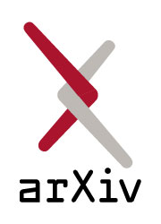
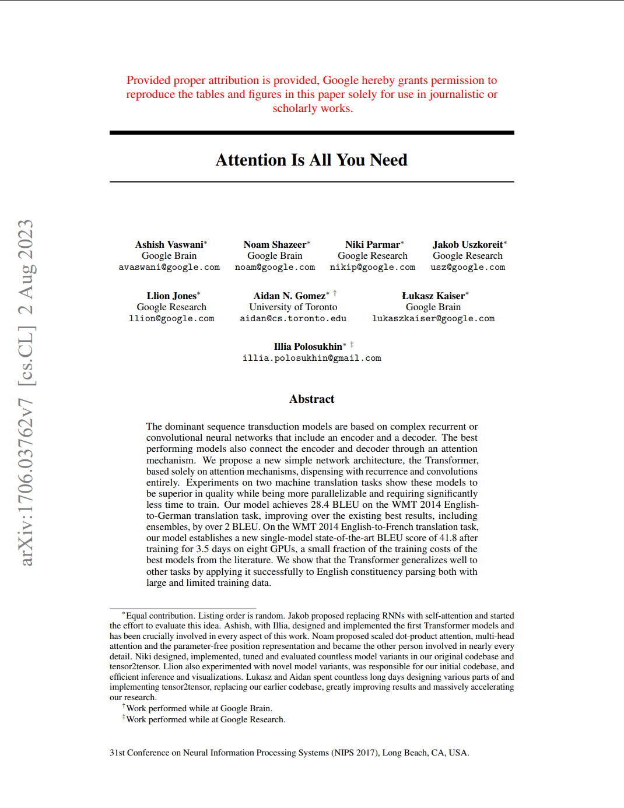
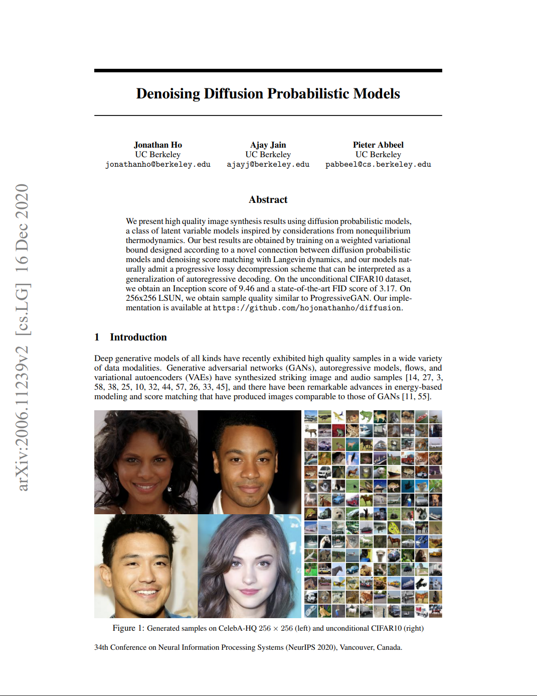

顶会论文
查看更多预印本精选
查看更多
自然语言处理
GPT-5: Scaling and Performance Analysis
本文详细分析了GPT-5的架构改进和性能表现，相比GPT-4在多模态理解和复杂推理任务上有显著提升...
查看预印本技术综述
查看更多论文解读
查看更多
Attention Is All You Need 精读
详细解析Transformer架构的每个组件，包括自注意力机制、位置编码等，附带PyTorch实现代码。

扩散模型从原理到实践
深入浅出讲解扩散模型的数学原理，包含DDPM、DDIM等变体的代码实现和效果对比。